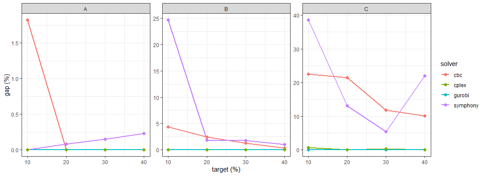
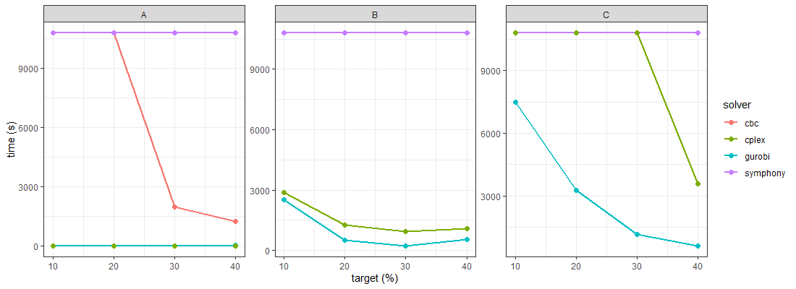

The prioriactions R package offers diverse optimization
solvers, both academic and non-academic, to tackle mathematical models.
Notably, it supports cutting-edge commercial optimization software such
as gurobi and CPLEX, as well as non-academic
alternatives like CBC and symphony. In the
realm of supported solvers, CPLEX and gurobi
generally stand out for their superior speed. It’s worth noting that
while these are commercial tools, they do offer special academic
licenses at no charge.
Depending on the intricacy of the management planning problem at
hand, solvers based on open-source software may only marginally trail
behind their commercial counterparts in terms of the speed and quality
of the solutions. In the following analysis, we will explore and
evaluate the performance of these different software options that
prioriactions provides.
This analysis encompassed the generation of prioritizations through
all solvers available in prioriactions, accompanied by
measuring the time and quality of the solutions (gap) each
solver required to complete the process. We explored a set of management
planning problems characterized by distinct models (referred to as
models (A), (B),
(C)). Among the models considered, (C)
stands out for being the largest model due to the incorporation of
spatial connectivity requirements between actions (\(blm_k\) = 0.8). In contrast, model
(B) entails connectivity solely between management
units (\(blm\) = 0.8), while model
(A) lacks any form of spatial requirement.
Consequently, solving model (A) should be comparatively
straightforward, given its absence of spatial constraints (further
elaborated in Table below with model sizes). Also, we introduce
variations in the target achievement levels (10%, 20%, 30%, and 40%
respectively), thereby altering the inherent attributes of the models.
All benchmark scenarios encompassed the Mitchell River case study
presented, i.e. 2,316 planning units, 45 features, and 4 threats.
| Modelling_Setting | Variables | Constraints | Nonzeros |
|---|---|---|---|
| (A) \(blm = 0, blm_k = 0\) | 43180 | 37371 | 136566 |
| (B) \(blm = 0.8, blm_k = 0\) | 61428 | 92115 | 264302 |
| (C) \(blm = 0, blm_k = 0.8\) | 89150 | 175281 | 458356 |
Our experimental setup was conducted on a machine powered by an Intel
Core i5-1240P 3.30GHz processor, paired with 16 GB of RAM
LPDDR5-6400MHz, and running Ubuntu 22.04 LTS. Firstly, the
time_limit parameter, which designates the maximum period
the solver dedicates to pursuing an optimal solution, was set to 10,800
seconds, equivalent to a span of 3 hours. It is noteworthy that no
constraint was placed on the gap to achieve
(gap_limit = 0}), underscoring the aim of attaining the
utmost optimal solution within the aforementioned three-hour timeframe.
Secondly, the number of cores utilized was set to ten. Futhermore, we
employed the most recent versions of all available optimizers within the
prioriactions framework. Specifically, for
BM CPLEX, we utilized version 22.1.1.0 in conjunction with
Rcplex version 0.3.7. Gurobi was employed at
version 10.0.0, while Rcbc was utilized at its version
0.1.0.9001. Additionally, for symphony, we leveraged
Rsymphony with version 0.1-33 to ensure a comprehensive and
up-to-date foundation for our analyses.
To derive these outcomes, we solely adjusted in the third step,
involving the alteration of the solver’s name within the
solve() function embedded in the prioriactions
package.
# solve the model
solution <- solve(model, solver = "gurobi", gap_limit = 0, time_limit = 10800,
solution_limit = FALSE, cores = 10, output_file = TRUE, verbose = TRUE)In the subsequent segments, we will offer distinct log outputs corresponding to each of the experimental solvers operating within scenario (A), where the recovery target is set at 10%. These log records will serve as illustrative examples, providing insight into the information presented throughout the optimization process.
Gurobi
The logs follow a consistent structure, albeit with variations based on the information being presented and the manner of presentation. This structure can be succinctly summarized into four key sections: (i) optimizer settings; the initial part includes details about the settings and configurations of the optimizer (lines 1 to 8). (ii) presolve; to fine-tune the model. This step involves searching for the bounds associated with the relaxed solution (infeasible), among other tasks (lines 15 to 31). (iii) solutions search; entails an active pursuit of the optimal solution (or one of the optimal solutions, if multiple exist, lines 33 to 61). And, (iv) summary; summarises the entire optimization process, providing quality gaps and times, among other things (lines 63 to 69). In this particular instance, the optimal solution (with a gap of 0.00%) was successfully attained, yielding a value of 646, 10 seconds after the process started.
1 Gurobi 10.0.0 (linux64, R) logging started dom 06 ago 2023 19:49:56
2
3 Set parameter Username
4 Set parameter TimeLimit to value 10800
5 Set parameter MIPGap to value 0
6 Set parameter NodefileStart to value 0.5
7 Set parameter LogFile to value "modelA_10_gurobi_log.txt"
8 Set parameter Threads to value 10
9 Academic license - for non-commercial use only - expires 2024-01-25
10 Gurobi Optimizer version 10.0.0 build v10.0.0rc2 (linux64)
11
12 CPU model: 12th Gen Intel(R) Core(TM) i5-1240P, instruction set [SSE2|AVX|AVX2]
13 Thread count: 16 physical cores, 16 logical processors, using up to 10 threads
14
15 Optimize a model with 37371 rows, 43180 columns and 136566 nonzeros
16 Model fingerprint: 0x96123de4
17 Variable types: 34965 continuous, 8215 integer (8215 binary)
18 Coefficient statistics:
19 Matrix range [3e-01, 4e+00]
20 Objective range [1e+00, 1e+00]
21 Bounds range [1e+00, 1e+00]
22 RHS range [5e-01, 2e+02]
23 Found heuristic solution: objective 7947.0000000
24 Found heuristic solution: objective 4978.0000000
25 Presolve removed 35017 rows and 35259 columns
26 Presolve time: 0.15s
27 Presolved: 2354 rows, 7921 columns, 66284 nonzeros
28 Variable types: 0 continuous, 7921 integer (7904 binary)
29 Found heuristic solution: objective 817.0000000
30
31 Root relaxation: objective 5.657750e+02, 3822 iterations, 0.05 seconds (0.26 work units)
32
33 Nodes | Current Node | Objective Bounds | Work
34 Expl Unexpl | Obj Depth IntInf | Incumbent BestBd Gap | It/Node Time
35
36 0 0 565.77500 0 279 817.00000 565.77500 30.7% - 0s
37 H 0 0 699.0000000 565.77500 19.1% - 0s
38 H 0 0 663.0000000 565.77500 14.7% - 0s
39 H 0 0 651.0000000 565.77500 13.1% - 0s
40 0 0 573.58333 0 399 651.00000 573.58333 11.9% - 0s
41 0 0 575.33333 0 387 651.00000 575.33333 11.6% - 0s
42 0 0 577.54167 0 457 651.00000 577.54167 11.3% - 1s
43 0 0 580.01543 0 429 651.00000 580.01543 10.9% - 1s
44 H 0 0 647.0000000 580.51543 10.3% - 1s
45 0 0 580.51543 0 434 647.00000 580.51543 10.3% - 1s
46 0 0 580.51543 0 431 647.00000 580.51543 10.3% - 1s
47 0 0 590.16667 0 350 647.00000 590.16667 8.78% - 1s
48 0 0 590.26667 0 334 647.00000 590.26667 8.77% - 1s
49 0 0 590.26667 0 327 647.00000 590.26667 8.77% - 1s
50 0 0 599.85185 0 258 647.00000 599.85185 7.29% - 1s
51 0 0 603.87037 0 236 647.00000 603.87037 6.67% - 1s
52 0 0 614.47222 0 161 647.00000 614.47222 5.03% - 1s
53 0 0 614.47222 0 158 647.00000 614.47222 5.03% - 1s
54 0 0 614.72222 0 130 647.00000 614.72222 4.99% - 1s
55 0 0 614.72222 0 146 647.00000 614.72222 4.99% - 1s
56 0 0 614.72222 0 194 647.00000 614.72222 4.99% - 1s
57 0 0 614.72222 0 160 647.00000 614.72222 4.99% - 2s
58 H 0 0 646.0000000 614.72222 4.84% - 2s
59 0 2 614.72222 0 160 646.00000 614.72222 4.84% - 2s
60 1966 2055 630.50000 123 31 646.00000 626.33333 3.04% 9.7 5s
61 7481 7363 630.50000 460 43 646.00000 626.33333 3.04% 7.2 10s
62
63 Explored 8192 nodes (87667 simplex iterations) in 11.58 seconds (16.40 work units)
64 Thread count was 10 (of 16 available processors)
65
66 Solution count 8: 646 647 651 ... 7947
67
68 Optimal solution found (tolerance 0.00e+00)
69 Best objective 6.460000000000e+02, best bound 6.460000000000e+02, gap 0.0000%CPLEX
Similar to gurobi, the CPLEX log adheres
closely to the outlined structure. Precisely, lines 3 to 9 correspond to
(i), while lines 10 to 30 encompass
(ii). Furthermore, lines 31 to 49 represent
(iii), and lines 51 to 63 represent
(iv). In this context, the optimal solution was swiftly
identified within a mere 2.08 seconds while maintaining the identical
objective value of 646.
1 CPLEX environment opened
2 Warning: The following options are not availables using cplex solver: output_file
3 Rcplex: num variables=43180 num constraints=37371
4 Version identifier: 22.1.1.0 | 2022-11-28 | 9160aff4d
5 CPXPARAM_TimeLimit 10800
6 CPXPARAM_MIP_Tolerances_AbsMIPGap 0
7 CPXPARAM_MIP_Tolerances_MIPGap 0
8 CPXPARAM_MIP_Pool_RelGap 0
9 CPXPARAM_MIP_Pool_AbsGap 0
10 Found incumbent of value 8215.000000 after 0.00 sec. (2.35 ticks)
11 Tried aggregator 4 times.
12 MIP Presolve eliminated 1402 rows and 300 columns.
13 MIP Presolve added 2688 rows and 0 columns.
14 MIP Presolve modified 354 coefficients.
15 Aggregator did 34959 substitutions.
16 Reduced MIP has 3698 rows, 7921 columns, and 67628 nonzeros.
17 Reduced MIP has 7904 binaries, 17 generals, 0 SOSs, and 0 indicators.
18 Presolve time = 0.39 sec. (1525.39 ticks)
19 Probing time = 0.00 sec. (2.02 ticks)
20 Tried aggregator 1 time.
21 Detecting symmetries...
22 Reduced MIP has 3698 rows, 7921 columns, and 67628 nonzeros.
23 Reduced MIP has 7904 binaries, 17 generals, 0 SOSs, and 0 indicators.
24 Presolve time = 0.03 sec. (51.39 ticks)
25 Probing time = 0.01 sec. (2.02 ticks)
26 Clique table members: 5591.
27 MIP emphasis: balance optimality and feasibility.
28 MIP search method: dynamic search.
29 Parallel mode: deterministic, using up to 16 threads.
30 Root relaxation solution time = 0.06 sec. (98.92 ticks)
31 Nodes Cuts/
32 Node Left Objective IInf Best Integer Best Bound ItCnt Gap
33
34 * 0+ 0 7947.0000 0.0000 100.00%
35 * 0+ 0 925.0000 0.0000 100.00%
36 * 0+ 0 768.0000 0.0000 100.00%
37 0 0 566.4167 353 768.0000 566.4167 2719 26.25%
38 * 0+ 0 766.0000 566.4167 26.06%
39 0 0 577.0000 387 766.0000 Cuts: 453 3327 24.67%
40 * 0+ 0 651.0000 577.0000 11.37%
41 0 0 581.0833 361 651.0000 Cuts: 384 3778 10.74%
42 0 0 592.9111 293 651.0000 Cuts: 356 4484 8.92%
43 * 0+ 0 646.0000 592.9111 8.22%
44 0 0 -1.00000e+75 0 646.0000 592.9111 4484 8.22%
45 0 0 604.6852 207 646.0000 Cuts: 279 5004 6.40%
46 0 0 608.2222 170 646.0000 Cuts: 189 5264 5.85%
47 0 0 637.3333 13 646.0000 Cuts: 161 5393 1.34%
48 0 0 cutoff 646.0000 5406 0.00%
49 Elapsed time = 2.07 sec. (2723.02 ticks, tree = 0.01 MB, solutions = 1)
50
51 Clique cuts applied: 447
52 Cover cuts applied: 1269
53 Mixed integer rounding cuts applied: 3
54 Zero-half cuts applied: 56
55
56 Root node processing (before b&c):
57 Real time = 2.08 sec. (2724.47 ticks)
58 Parallel b&c, 16 threads:
59 Real time = 0.00 sec. (0.00 ticks)
60 Sync time (average) = 0.00 sec.
61 Wait time (average) = 0.00 sec.
62 ------------
63 Total (root+branch&cut) = 2.08 sec. (2724.47 ticks)CBC
In the case of CBC solver, the log provides an even
higher specificity level than its counterparts in gurobi
and CPLEX. In this instance, the breakdown is as follows:
lines 5 to 11 correspond to (i), offering initial
insights. Lines 12 to 66 delve into more intricate detailed aspects of
presolve (ii). Subsequently, lines 67 to 80 represent
(iii). Further along, lines 81 to 110 illustrate
(iv). Note that we have employed a stopping criterion
set at 3600 seconds. This decision stems from the understanding that
with this non-academic solver, an optimal solution might not be attained
within a shorter timeframe (as it indeed was the case). This approach
ensures that we are able to present the complete structure of the log
output comprehensively. Thus, an optimal solution was not reached
(gap of 0.04%). Instead, we found a solution with an objective
value of 653, marking a distinction from the previous solvers’ outcomes,
which converged at 646.
1 Welcome to the CBC MILP Solver
2 Version: 2.10.5
3 Build Date: Apr 21 2021
4
5 command line - problem -threads 10 -log 1 -verbose 15 -ratio 0 -sec 10800 -timem elapsed
6 -heuristicsOnOff on -solve -quit (default strategy 1)
7 verbose was changed from 0 to 15
8 ratioGap was changed from 0 to 0
9 seconds was changed from 1e+100 to 10800
10 Option for timeMode changed from cpu to elapsed
11 Option for heuristicsOnOff changed from off to on
12 Continuous objective value is 563.542 - 8.95 seconds
13 Cgl0004I processed model has 37313 rows, 42882 columns (7930 integer (7914 of which binary))
14 and 136210 elements
15 Cbc0038I Initial state - 372 integers unsatisfied sum - 123.042
16 Cbc0038I Pass 1: (9.34 seconds) suminf. 79.66667 (242) obj. 604.667 iterations 720
17 Cbc0038I Pass 2: (9.36 seconds) suminf. 78.16667 (239) obj. 606.167 iterations 3
18 Cbc0038I Pass 3: (9.39 seconds) suminf. 71.16667 (218) obj. 620.167 iterations 21
19 Cbc0038I Pass 4: (9.41 seconds) suminf. 63.83333 (196) obj. 634.833 iterations 22
20 Cbc0038I Pass 5: (9.44 seconds) suminf. 56.16667 (173) obj. 650.167 iterations 23
21 Cbc0038I Pass 6: (9.46 seconds) suminf. 46.50000 (144) obj. 669.5 iterations 29
22 Cbc0038I Pass 7: (9.49 seconds) suminf. 38.16667 (119) obj. 686.167 iterations 25
23 Cbc0038I Pass 8: (9.52 seconds) suminf. 33.83333 (106) obj. 694.833 iterations 13
24 Cbc0038I Pass 9: (9.54 seconds) suminf. 25.50000 (81) obj. 711.5 iterations 25
25 Cbc0038I Pass 10: (9.57 seconds) suminf. 18.16667 (59) obj. 726.167 iterations 22
26 Cbc0038I Pass 11: (9.59 seconds) suminf. 13.16667 (44) obj. 736.167 iterations 15
27 Cbc0038I Pass 12: (9.62 seconds) suminf. 7.50000 (27) obj. 747.5 iterations 17
28 Cbc0038I Pass 13: (9.64 seconds) suminf. 1.16667 (7) obj. 761.167 iterations 20
29 Cbc0038I Solution found of 767
30 Cbc0038I Relaxing continuous gives 767
31 Cbc0038I Cleaned solution of 767
32 Cbc0038I Before mini branch and bound, 7554 integers at bound fixed and 31499 continuous
33 Cbc0038I Full problem 37313 rows 42882 columns, reduced to 262 rows 253 columns
34 Cbc0038I Mini branch and bound improved solution from 767 to 765 (9.83 seconds)
35 Cbc0038I Round again with cutoff of 744.104
36 Cbc0038I Pass 14: (9.91 seconds) suminf. 79.66667 (242) obj. 604.667 iterations 0
37 Cbc0038I Pass 15: (9.94 seconds) suminf. 73.50000 (225) obj. 615.5 iterations 17
38 Cbc0038I Pass 16: (9.96 seconds) suminf. 64.83333 (199) obj. 632.833 iterations 26
39 Cbc0038I Pass 17: (9.99 seconds) suminf. 60.50000 (186) obj. 641.5 iterations 13
40 Cbc0038I Pass 18: (10.01 seconds) suminf. 56.16667 (173) obj. 650.167 iterations 13
41 Cbc0038I Pass 19: (10.04 seconds) suminf. 47.83333 (148) obj. 666.833 iterations 25
42 Cbc0038I Pass 20: (10.07 seconds) suminf. 39.50000 (123) obj. 683.5 iterations 25
43 Cbc0038I Pass 21: (10.09 seconds) suminf. 31.16667 (98) obj. 700.167 iterations 25
44 Cbc0038I Pass 22: (10.12 seconds) suminf. 25.83333 (82) obj. 710.833 iterations 16
45 Cbc0038I Pass 23: (10.14 seconds) suminf. 19.16667 (62) obj. 724.167 iterations 20
46 Cbc0038I Pass 24: (10.17 seconds) suminf. 9.83333 (34) obj. 742.833 iterations 28
47 Cbc0038I Pass 25: (10.21 seconds) suminf. 10.69574 (36) obj. 744.104 iterations 206
48 Cbc0038I Pass 26: (10.24 seconds) suminf. 10.12908 (36) obj. 744.104 iterations 48
49 Cbc0038I Pass 27: (10.28 seconds) suminf. 9.67908 (35) obj. 744.104 iterations 144
50 Cbc0038I Pass 28: (10.31 seconds) suminf. 10.69574 (34) obj. 744.104 iterations 26
51 Cbc0038I Pass 29: (10.34 seconds) suminf. 10.67908 (37) obj. 744.104 iterations 16
52 Cbc0038I Pass 30: (10.36 seconds) suminf. 10.67908 (37) obj. 744.104 iterations 3
53 Cbc0038I Pass 31: (10.62 seconds) suminf. 38.57092 (112) obj. 744.104 iterations 1444
54 Cbc0038I Pass 32: (10.67 seconds) suminf. 37.19574 (109) obj. 744.104 iterations 231
55 Cbc0038I Pass 33: (10.70 seconds) suminf. 36.59574 (107) obj. 744.104 iterations 159
56 Cbc0038I Pass 34: (10.71 seconds) suminf. 36.59574 (107) obj. 744.104 iterations 0
57 Cbc0038I Pass 35: (10.74 seconds) suminf. 36.52908 (107) obj. 744.104 iterations 29
58 Cbc0038I Pass 36: (10.77 seconds) suminf. 36.26241 (106) obj. 744.104 iterations 82
59 Cbc0038I Pass 37: (10.80 seconds) suminf. 36.19574 (106) obj. 744.104 iterations 115
60 Cbc0038I Pass 38: (10.83 seconds) suminf. 35.92908 (105) obj. 744.104 iterations 91
61 Cbc0038I Pass 39: (10.86 seconds) suminf. 35.52908 (105) obj. 744.104 iterations 58
62 Cbc0038I Pass 40: (10.89 seconds) suminf. 35.26241 (103) obj. 744.104 iterations 48
63 Cbc0038I Pass 41: (10.91 seconds) suminf. 35.26241 (103) obj. 744.104 iterations 0
64 Cbc0038I Pass 42: (10.94 seconds) suminf. 34.59574 (102) obj. 744.104 iterations 65
65 Cbc0038I Pass 43: (11.00 seconds) suminf. 33.39574 (99) obj. 744.104 iterations 253
66 Cbc0038I Rounding solution of 764 is better than previous of 765
67
68 Cbc0038I Before mini branch and bound, 7332 integers at bound fixed and 30532 continuous
69 Cbc0038I Full problem 37313 rows 42882 columns, reduced to 1758 rows 1877 columns
70 Cbc0038I Mini branch and bound did not improve solution (15.54 seconds)
71 Cbc0038I After 15.54 seconds - Feasibility pump exiting with objective of 742 - took 6.36 seconds
72 Cbc0012I Integer solution of 742 found by feasibility pump after 0 iterations and 0 nodes
73 (15.55 seconds)
74 Cbc0027I Exiting on user event
75 Cbc0005I Partial search - best objective 653 (best possible 629.9), took 3188627 iterations
76 and 1068 nodes (3615.33 seconds)
77 Cbc0032I Strong branching done 16196 times (715305 iterations), fathomed 0 nodes and fixed 0
78 variables
79 Cbc0035I Maximum depth 52, 0 variables fixed on reduced cost
80 Cuts at root node changed objective from 565.042 to 629.9
81 Probing was tried 1274 times and created 211829 cuts of which 4667 were active after adding
82 rounds of cuts (4.965 seconds)
83 Gomory was tried 1274 times and created 9045 cuts of which 0 were active after adding rounds
84 of cuts (32.725 seconds)
85 Knapsack was tried 1274 times and created 233 cuts of which 0 were active after adding rounds
86 of cuts (22.010 seconds)
87 Clique was tried 10 times and created 0 cuts of which 0 were active after adding rounds of cuts
88 (0.012 seconds)
89 MixedIntegerRounding2 was tried 1274 times and created 20769 cuts of which 0 were active after
90 adding rounds of cuts (12.944 seconds)
91 FlowCover was tried 10 times and created 150 cuts of which 0 were active after adding rounds
92 of cuts (0.263 seconds)
93 TwoMirCuts was tried 1274 times and created 50422 cuts of which 0 were active after adding
94 rounds of cuts (11.078 seconds)
95 ZeroHalf was tried 1274 times and created 921 cuts of which 0 were active after adding rounds
96 of cuts (10.462 seconds)
97 ImplicationCuts was tried 20 times and created 634 cuts of which 0 were active after adding
98 rounds of cuts (0.006 seconds)
99
100 Result - User ctrl-cuser ctrl-c
101
102 Objective value: 653.00000000
103 Lower bound: 629.900
104 Gap: 0.04
105 Enumerated nodes: 1068
106 Total iterations: 3188627
107 Time (CPU seconds): 3620.45
108 Time (Wallclock seconds): 3620.51
109
110 Total time (CPU seconds): 3620.46 (Wallclock seconds): 3620.52Symphony
Contrary to the previous logs shown, symphony offers a
minimalistic yet essential amount of information. As in
CBC, we have set the stop criteria to 3600 seconds, for the
same reasons. As noted, sections (i) and
(ii) are omitted, while section (iv)
only indicates the objective value of the solution achieved (lines 38 to
44). In turn, the section (iii) is similar to the log
from gurobi and CPLEX (lines 8 to 36). Note
that the most recent solution uncovered has a target value of 646. While
it is currently evaluating whether this constitutes the optimal solution
(reflecting a gap of 2.49%), it is pertinent to highlight that
we are confident in asserting its optimality based on the solutions
identified by gurobi and CPLEX.
1 Starting Preprocessing...
2 Preprocessing finished...
3 coefficients modified: 268
4 constraints removed: 48
5 variables fixed: 290
6 variables aggregated: 17
7
8 Solving...
9
10 Time Done Queued LB UB Gap
11 48 1 1 629.90 652.00 3.39
12 54 8 8 629.90 652.00 3.39
13 60 17 17 629.90 652.00 3.39
14 66 26 26 629.90 652.00 3.39
15 72 36 36 629.90 651.00 3.24
16 78 47 47 629.90 649.00 2.94
17 84 61 61 629.90 648.00 2.79
18 90 76 76 629.90 648.00 2.79
19 96 90 90 629.90 648.00 2.79
20 102 106 106 629.90 648.00 2.79
21 ...
22 3511 4343 4343 629.90 646.00 2.49
23 3517 4348 4348 629.90 646.00 2.49
24 3523 4352 4352 629.90 646.00 2.49
25 3529 4357 4357 629.90 646.00 2.49
26 3535 4362 4362 629.90 646.00 2.49
27 3541 4366 4366 629.90 646.00 2.49
28 3547 4369 4369 629.90 646.00 2.49
29 3553 4373 4373 629.90 646.00 2.49
30 3559 4378 4378 629.90 646.00 2.49
31 3566 4382 4382 629.90 646.00 2.49
32 3572 4386 4386 629.90 646.00 2.49
33 3578 4389 4389 629.90 646.00 2.49
34 3585 4394 4394 629.90 646.00 2.49
35 3592 4398 4398 629.90 646.00 2.49
36 3598 4402 4402 629.90 646.00 2.49
37
38 ****************************************************
39 * Time Limit Reached *
40 ****************************************************
41
42
43 Solution Found: Node 217, Level 109
44 Solution Cost: 646.000000000We have conducted 48 tests, encompassing three distinct models
(models (A), (B), and
(C)) and spanning four recovery targets (10%, 20%, 30%,
and 40%). These tests were carried out across all four available solvers
within the prioriactions framework, comprising two academic
solvers (gurobi and CPLEX) and two
non-academic alternatives (CBC and
symphony).

gurobi vs CPLEX
Upon comparing the two academic solvers, a similarity in behaviour
becomes evident. In the context of gurobi, optimal
solutions were successfully achieved across all scenarios, as evidenced
by gaps amounting to zero. Similarly, when employing
CPLEX, we observed zero gaps across all scenarios,
with the exceptions occurring in model (C) targeting
10%, where a gap of 0.73% emerged, and in model (C)
targeting 30%, which exhibited a gap of 0.24% (see upper right
box in previous Figure). Nonetheless, a consistent disparity becomes
apparent in terms of processing times. gurobi consistently
exhibited a lead in verifying optimal solutions across most scenarios,
with only slight variations in model (A) (distanced by
seconds). Assuming that CPLEX achieved optimal solutions in
all instances, verification required an average of 3510.847 seconds. In
contrast, gurobi outperformed with an average of 1365.47
seconds, representing approximately 39% of the time taken by
CPLEX (see bottom boxes in the previous Figure).
CBC vs symphony
In this context, it is a more varied panorama, with CBC
notably standing out. In 8 out of the 12 comparative analyses against
symphony, CBC demonstrated superior solution
qualities, as indicated by the upper boxes in Figure above. Furthermore,
the average gaps achieved by CBC stand at 6.35%,
while its counterpart averages 9.06%. Turning to run times,
CBC exhibited the capability to verify optimal solutions
ahead of symphony in model (A),
particularly with target restrictions of 30% and 40%. However, it is
noteworthy that both solvers encountered challenges in validating the
optimality of the obtained solutions in the remaining models (see bottom
boxes in Figure above).
The benchmark findings underscore the considerable variability in the
time required to resolve multi-action management planning challenges.
This temporal difference is contingent upon diverse factors,
encompassing the problem’s scale, intricacy, and the solver engaged in
formulating the prioritization. Notably, specific solvers, such as the
symphony solver, may demand several hours to address a
predicament that could be resolved within minutes by other solvers like
CPLEX or gurobi. In terms of recommendations,
we advise prioritizing the utilization of gurobi and
CPLEX solvers whenever feasible, as they frequently exhibit
superior performance with respect to the non-academic solvers. While
academics can avail special licenses for these solvers at no cost, it is
crucial to recognize that conservation planners within governmental or
non-governmental entities might not have access to these resources. In
scenarios where access to the aforementioned solvers is limited, we
propose the adoption of the CBC solver, which generally
demonstrates better efficacy compared to symphony. In any
case, due to the complexity of exploring in detail all the possible
instances (number of units, species, threats and their respective
combinations), we recommend being cautious with these results.
Considering the intrinsic combinatorial nature of these models, even
solvers as robust as gurobi may encounter difficulties when
tackling exhaustive analyses.